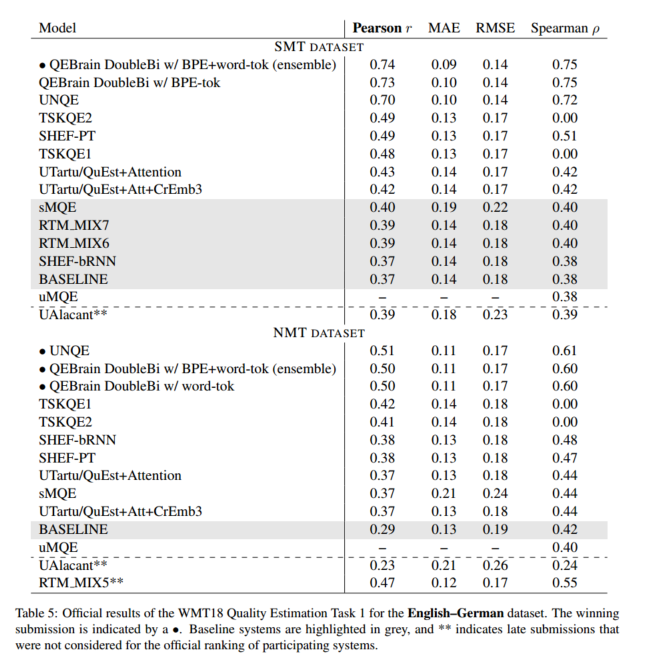
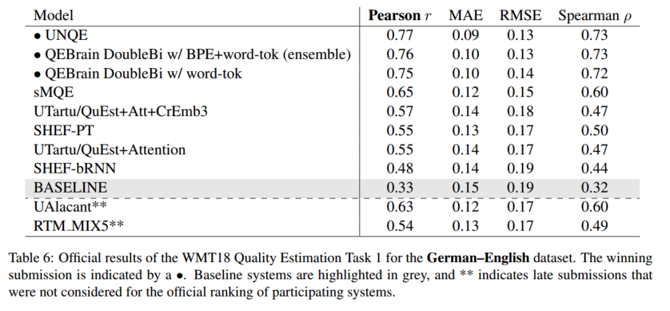
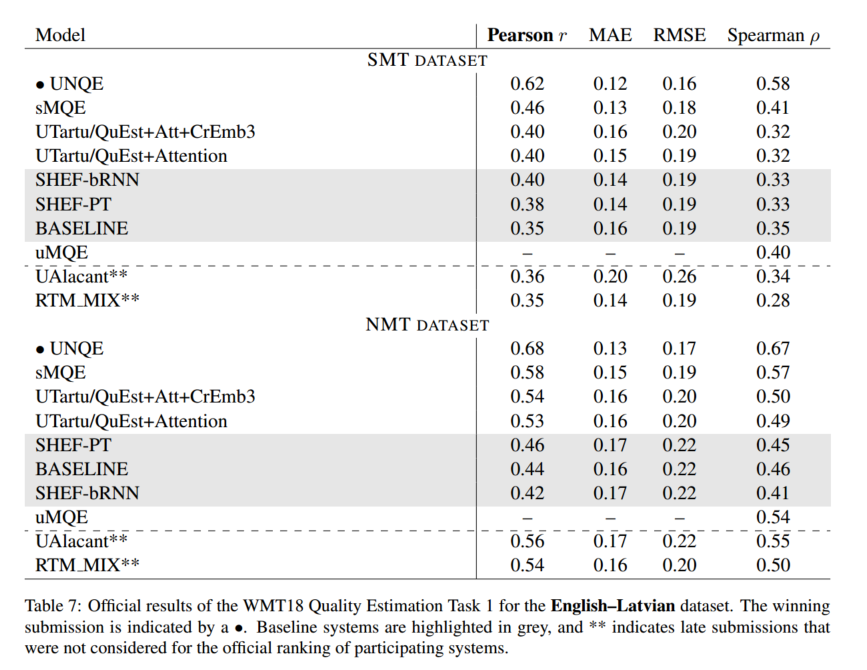
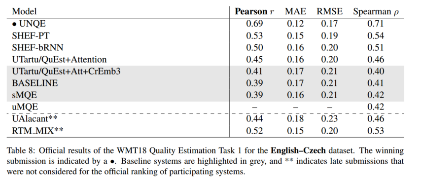
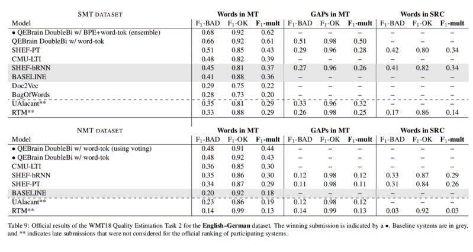
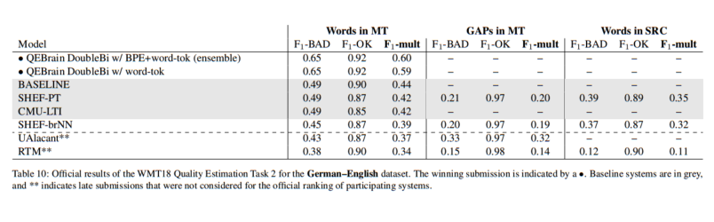
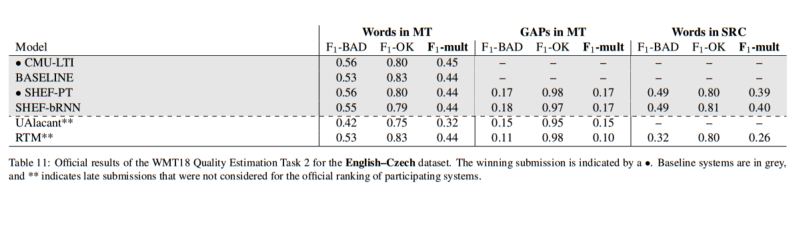
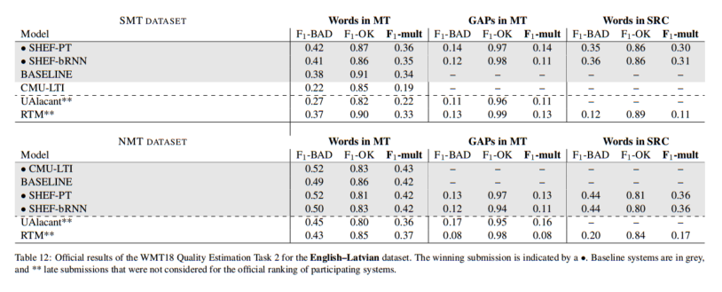
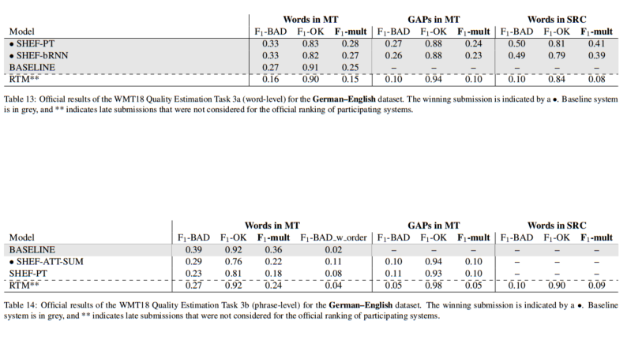
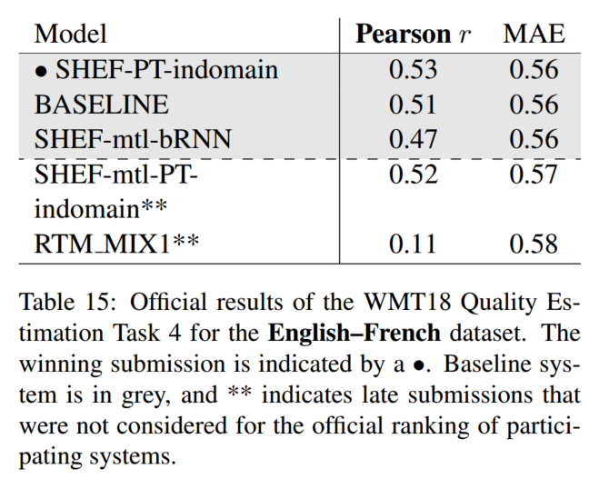

论文地址：Findings of the WMT 2018 Shared Task on Quality Estimation
这篇文章报告了WMT18 Quality Estimation任务的结果。
各系统及提交者
本次参与评测的一共有10个系统（其中UAlacant和RTM因为迟交没有计入正式排名）：
| 系统名称 | 提交者 | 具体提交 | 参与任务 | Task1 | Task2 | Task3 | Task4 |
|---|---|---|---|---|---|---|---|
| CMU-LTI | CMU | 1. CMU-LTI | T2 | - | 次于QEBrain，和SHEF-PT表现相当 | - | - |
| JU-USAAR | Jadavpur University & University of Saarland | 1. Bag-of-Words 2. Doc2Vec |
T2 | - | 低于baseline | - | - |
| MQE | Vicomtech | 1. sMQE 2. uMQE |
T1 | 和baseline持平 | - | - | - |
| QEbrain | 阿里 | 1. QEBrain DoubleBi w/ BPE+word-tok 2. QEBrain DoubleBi w/ BPE+word-tok (ensemble) |
T1, T2 | QEBrain和UNQE并列第一，远高于其他系统 | 第一名，且gap error detection子任务表现非常好 | - | - |
| RTM | Biçici | 1. RTM 2. RTM_MIX1 3. RTM_MIX5 4. RTM_MIX6 5. RTM_MIX7 |
T1-T4 | 在NMT数据集上接近UNQE和QEBrain的结果 | 低于baseline | 低于baseline | 远不如baseline |
| SHEF | University of Sheffield | 1. SHEF-PT 2. SHEF-bRNN 3. SHEF-ATT-SUM 4. SHEF-PT-indomain 5. SHEF-mtl-bRNN 6. SHEF-mtl-PT-indomain |
T1-T4 | 大致处于排名中间位置 | 第二名（因为很多系统没有参与Task2） | 与baseline相当 | 略高于baseline |
| TSKQE | 汉堡大学 | 1. TSKQE1 2. TSKQE2 |
T1 | 第三名（低于QEBrain和UNQE） | - | - | - |
| UAlacant | University of Alacant | 1. UAlacant | T1, T2 | 和baseline相当 | 低于baseline | ||
| UNQE | 江西师范大学 | UNQE | T1 | 和QEBrain并列第一，远高于其他系统 | - | - | - |
| UTaru | University of Taru | 1. UTartu/QuEst+Attention 2. UTartu/QuEst+Att+CrEmb3 |
T1, T2 | 略高于baseline | 低于baseline | - | - |
可以看出，这次比赛中，QEBrain和UNQE系统的效果是最好的，其次是CMU-LTI、TSKQE和SHEF。
QEBrain（T1，T2，阿里）
QEBrain系统的参赛者已经把论文贴到Arxiv上了（“Bilingual Expert” Can Find Translation Errors），之后我会再去仔细读……不过简单来说好像是这样的：
- feature extraction (target language) model（作为特征提取器）
- multi-head self-attention
- 源语言的transformer encoder
- 目标语言的bi-transformer encoder
- 预训练过的双向transformer（作为预测器）
- 输入上述特征提取器得到的特征和baseline系统提供的特征
并且进行了ensemble。
UNQE（T1，江西师范大学）
他们把论文投到IEICE了（A Unified Neural Network for Quality Estimation of Machine Estimation），之后我会再去仔细读……不过简单来说好像是这样的：
- bi-RNN encoder-decoder + attention：从翻译输出中提取quality vector
- RNN：通过quality vector预测翻译输出的HTER值
模型进行了预训练；输出结果进行了模型平均。
CMU-LTI（T2，CMU）
他们也把论文贴到arXiv了（Contextual Encoding for Translation Quality Estimation）。模型分为三个主要部分：
- embedding layer：表示词和POS tag
- 1d convolution layer：将每个词和它的local context结合起来
- stack of feed-forward and RNN: 将每个词和它的global context结合起来；同时输入一些句法feature
TSKQE（T1，汉堡大学）
我确实没找到他们今年的论文（只找到了去年的，UHH Submission to the WMT17 Quality Estimation Shared Task）；他们的做法好像是对源句应用sequence kernel、tree kernel，对译句应用candidate translation和back-translation，预测HTER得分。（我并没有看懂这些，好像是一种非深度学习的approach）
SHEF（T1-T4，University of Sheffield）
唯一在四个任务上都有正式提交的系统。我仍然没有找到他们今年的论文，但我找到了他们的一个类似的开源项目。今年他们提交了两个不同架构的系统：
- SHEF-PT：由Predictor和Estimator组成
- Predictor：经过一定修改的encoder-decoder RNN模型
- Estimator：bi-RNN，基于Predictor的输出进行预测
- 可以进行multi-task learning
- SHEF-bRNN：
- 用两个bi-RNN（GRU）学习(source, translation)对，输出word-level的预测
- 用attention机制对bi-RNN的输出（word-level的预测）进行加权平均，得到sentence-level的预测
对于phrase-level的预测，他们使用的是标准的基于attention的MT架构，将word-level的预测加权平均得到结果；对于预测source tag的任务，是把两边的输出反过来；对于document-level的任务，同时使用了PT和bRNN两种架构。
剩余的分数不太高的系统就不仔细看了。感觉NN方法占据了绝对优势。
Task1（句级QE）结果及讨论
这一任务的目标是对翻译输出的质量进行打分或排名。训练数据的label包括HTER、post-editing时间和post-editing中键盘敲击统计。
评价方法主要是皮尔森相关系数r（打分）和斯皮尔曼等级相关系数（排名）。
baseline是QUEST++：提取feature，用SVR+RBF kernel进行回归训练。




在该任务上表现最好的系统显然是QEBrain和UNQE，且它们的表现都远好于第三名；其中SHEF-PT是去年在该任务上表现最好的。这说明了Transformer技术应用在QE任务上之后大大提高了QE的表现。
SMT和NMT数据集的生成方法相同（分别用SMT和NMT系统对一个初始数据集进行翻译，进行post-edit，再移除其中过多的HTER=0的句对），但由于NMT的翻译效果远优于SMT，导致NMT数据集比较小，这也使得我们无法直接对SMT和NMT数据集上的结果进行比较；同时，NMT数据集上的平均HTER分数也更低，这些可能是导致En-De数据集上各系统普遍在NMT数据上表现较差的原因。但是在En-Lv数据集上，这一趋势完全是相反的，NMT数据上系统的表现较好。不过系统在不同数据集上的排名是类似的，说明QE系统一般具有鲁棒性。
另一个事实是，没有系统使用了post-editing时间和post-editing中键盘敲击统计这两种label。
Task2（词级QE）结果及讨论
这个任务相当于有三个子任务，分别对三种不同的token进行标记，并分别进行测试：
- 译句中的普通token：根据post-edited版本进行标注，应被替换和删除的标记为BAD，其余标为OK
- 译句中的gap token：在译句中每个token之后和句首插入gap token（也就是说，如果原来有N个token，插入之后会变成2*N+1个token），如果gap token对应位置相比post-edited版本发生漏词，则该gap token标记为BAD；否则标为OK
- 源句中的token：使用fastalign工具将源句和post-edited版本的译句进行对齐；对于源句中的每个token，如果和它对齐的post-edited版本的译句中的token在译句中被删除或替换，则该token标记为BAD；否则标为OK
评价方式：对上述每种token的OK和BAD类别分别计算F1分数并相乘，以F1-mult作为最终评分标准。
baseline：提取feature后，作为sequence prediction问题，用CRF算法进行训练。




由于在各个数据集上进行提交的系统都不太一样，所以很难进行完整的比较。
参与En-De和De-En任务的系统最多；和往年一样，Task1的结果和Task2的结果相关性很强，所以QEBrain在task2也获胜了。由于UNQE等系统没有参与Task2，表现次好的系统是SHEF-PT，落后得稍微少一点。
对于En-De数据集，很显然各个系统在NMT数据集上的表现远差于SMT数据集；而En-Lv数据集中，系统在SMT数据集上表现更好，这和Task1也相同。
只有很少几个系统提交了gap检测和导致错误的源词的新任务；这些系统的表现都比较一般，但结果和在主任务上的表现是相关的。QEBrain系统在gap检测上的表现非常之好（没有在其他任务上提交）。并且从分数可以看出，预测源句中导致错误的token比预测译句中的错误token更难；这可能是因为“源句中导致错误的token”有更多的可能性。
En-Lv NMT数据集上，所有系统都只能达到baseline的效果；En-Cs数据集上所有系统的表现都差不多。这可能是因为预处理数据资源不够。
Task3（短语级QE）结果及讨论
短语有四类标注：
- OK：正确的短语
- BAD：包含错误的短语
- BAD_word_order：短语在句中位于错误的位置
- BAD_omission：短语前后缺词
这一任务分成两个子任务：
- Task3a：和Task2一样，在译句中每个token之后和句首插入gap token；然后用SMT decoder将译句分成短语，对短语进行标注：最后将标注结果标到具体的词上，相当于这也是一个word-level的任务
- Task3b：直接对短语进行标注，每个短语前后各有一个gap token，gap可能被标注为OK或BAD_omission。
评价方式：
- Task3a：和Task 2相同，都是OK和BAD类别下的F1-mult
- Task3b：短语级别的F1-mult
这一任务只有De-En数据集，数据是手动标注的（而非post-edit后再自动生成的）。
baseline：提取feature后，作为sequence labelling问题，用CRF算法进行训练。

和Task2的De-En结果相比，BAD类别的F1分数显著降低了。这一现象可能是因为数据生成的方式导致的，phrase label粒度更粗一些。
事实上，只有SHEF-PT和SHEF-bRNN系统参与了这一任务；它们在Task3a上的表现和baseline差不多，在Task3b上还不如baseline。作者据此认为短语级别的预测仍然是很有挑战的任务，但我觉得样本量太少了，也不是很有代表性。不过这可能说明我们需要更好的神经网络结构。
Task4（文档级QE）结果及讨论
这一任务的要求是对整个文档的翻译质量进行打分。文档中在accuracy、fluency和style三个方面出错的词被标出，并根据严重程度分为minor、major和critical三类；文档的真实得分由人类打出。
评价方式是预测得分和真实得分的皮尔森相关系数r。
baseline：QUEST++

显然，baseline的得分已经很高了；只有SHEf-PT-indomain的分数稍高于baseline。这说明Task4是一项很难的任务；同时很难评价系统在这一任务上的表现。